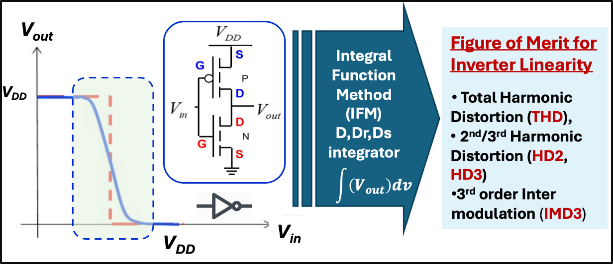

Hardware Security Researcher · PhD Candidate, Electrical Engineering
AI chips worth $40,000 are being counterfeited. Supply chains are compromised. I build the silicon-level authentication that proves a chip is genuine — using physics that can't be faked or cloned.
I build silicon-level trust primitives — modeling device physics, designing and validating hardware authentication mechanisms, and translating Physically Unclonable Functions (PUF) into deployable security for semiconductor platforms, supply chains, and embedded systems.
📍 Currently: Finishing PhD · Presenting at IEEE MWSCAS and GLSVLSI 2026 · Open to roles from Fall 2026
About
My research develops physics-driven methods to extract, model, and validate silicon-born signatures for authentication, aging diagnostics, and supply-chain verification. I combine experimental device analysis, TCAD simulation, and Bayesian signal processing to turn subtle device-level phenomena into robust security primitives.
The most defensible hardware security solutions start at the device level. By modeling trap kinetics, process variation, and defect-driven signatures, I create authentication constructs rooted in physics — applicable across technology nodes and measurable in the lab.
I pair academic rigor with industry pragmatism. At Vertiv and Thermo Fisher Scientific I led PCB validation and platform development — experience that informs how I design experiments, translate results to engineering requirements, and communicate risk to stakeholders.
Publications
A PUF with no extra hardware — authentication built from inverter physics alone.
Proposed a novel Physically Unclonable Function (PUF) that uses CMOS inverter nonlinearity — quantified via the Integral Function Method — as a physics-governed security primitive. Verified through TCAD simulation on 22nm CMOS, demonstrating strong uniqueness and applicability to IC authentication, supply-chain integrity, and hardware root-of-trust architectures.
What if device aging could double as a security primitive? This paper answers that.
Demonstrated that Current Transient Spectroscopy (CTS) can function as a silicon-level authentication and aging diagnostic mechanism by extracting charge-trap kinetics as process-specific device signatures. Built Python and MATLAB pipelines with Bayesian signal processing to turn device-level physics into deployable security and reliability primitives.
Simulation proved the concept. This paper proves it on real silicon.
Presented the first experimental hardware demonstration of the IFM-based PUF — moving from simulation to real silicon using two commercial inverter families (CD4069, SN74HC04). Confirmed that distortion fingerprints are device-specific, consistent, and robust under real-world noise, establishing a hardware-implementable authentication primitive resistant to brute-force and AI-based attacks.
Same PUF, three different chip families — authentication that scales across technology nodes.
Extended the IFM-PUF framework across three commercial PDKs at 22nm and 45nm to demonstrate process-level identification and technology-specific security fingerprinting. Showed that each process family produces a unique distortion profile — enabling authentication at the process level — validated through Monte Carlo simulation and temperature sweeps from −40°C to 100°C.
Developed a hardware framework using PUF-based root-of-trust primitives to detect faults and intrusion attempts in industrial control systems. Bridges silicon-level IC authentication with system-level operational monitoring — applicable to securing industrial infrastructure, embedded platforms, and AI inference hardware.
The Core Method — How IFM-PUF Works

CMOS inverter nonlinearity is extracted using the Integral Function Method (IFM). The resulting harmonic distortion metrics (THD, HD2, HD3, IMD3) form a device-specific fingerprint — unclonable because it originates from nanoscale physics of how each chip was fabricated.
Industry Relevance
The idea in plain english
This is a Physically Unclonable Function (PUF) — the foundation of hardware-level trust that I research, publish, and validate on real silicon.
Hardware counterfeiting, supply chain compromise, and silicon-level attacks are active threats across every major technology sector. My research builds authentication primitives rooted in device physics — applicable wherever a chip needs to prove it is genuine, unmodified, and trustworthy.
NVIDIA H100 GPUs selling for $30–40K each are actively being counterfeited due to export controls. AI accelerators with counterfeit or tampered silicon can compromise model integrity and infrastructure security. PUF-based authentication proves each chip is genuine — from the physics of how it was made.
Confidential computing isolates sensitive workloads at the hardware level — but only if the chip can prove it hasn't been tampered with. Hardware root-of-trust is the foundation every confidential computing product is built on. My PUF research provides that foundation.
Every ECU, ADAS processor, and V2X module must be authenticated under ISO/SAE 21434 (vehicle cybersecurity standard). Counterfeit automotive chips caused real-world failures during the chip shortage. Physics-based PUFs provide tamper-evident identity at production time.
Billions of edge devices need unique, unforgeable identities at manufacturing time — with no keys to store, manage, or leak. The IFM-PUF generates authentication from existing CMOS inverters, requiring no additional hardware area, making it ideal for cost-sensitive IoT silicon.
Hyperscalers buying millions of server components need hardware provenance verification — proof that what arrived in the rack is what was ordered. Supply chain attacks using counterfeit or backdoored components are a documented threat to cloud infrastructure.
PUF IP is a $500M+ market growing 20% annually. Synopsys (via Intrinsic ID acquisition) and Rambus CryptoManager lead this market — built on exactly the PUF architecture I've published and validated on real silicon.
Technical Skills
Experience
Education
Teaching & Service
In the Field
Recognition
Skills & Identity Map
An interactive map of how my technical expertise, research experience, and cognitive traits connect. Drag nodes to explore — hover any node to read what's behind it.
Contact
I'm actively exploring hardware security and silicon engineering roles for Fall 2026. If you're working on secure semiconductors, root-of-trust architectures, or supply-chain integrity — I'd love to talk.